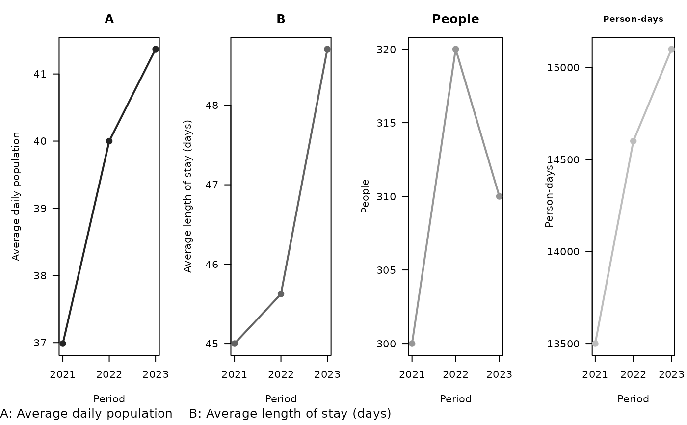
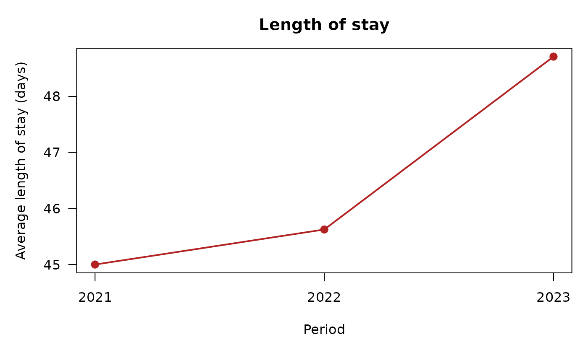
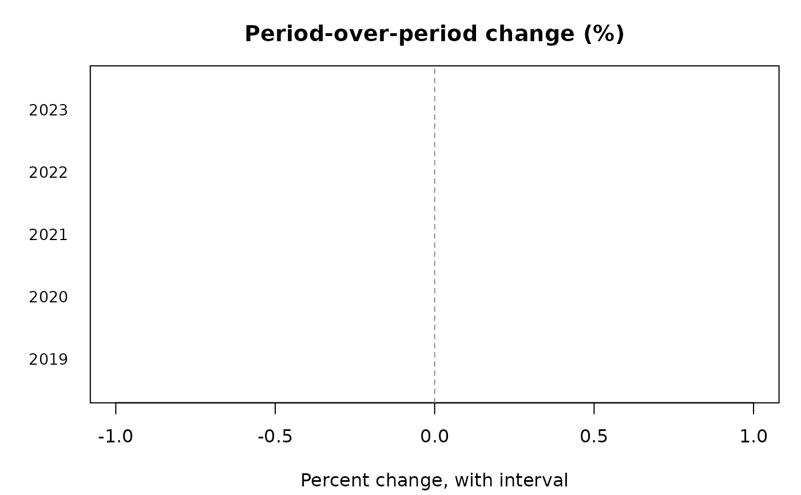
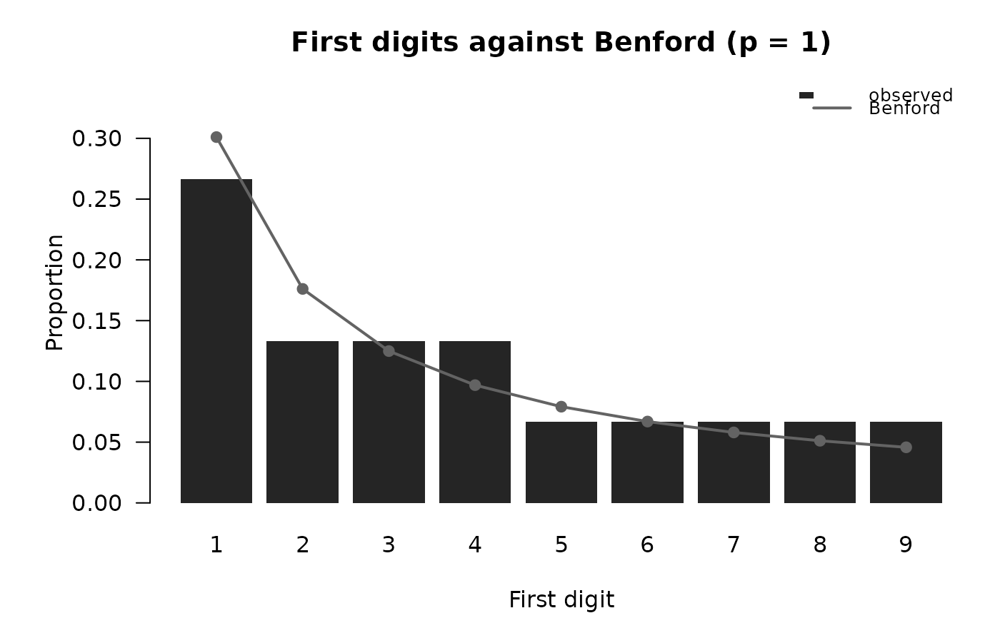
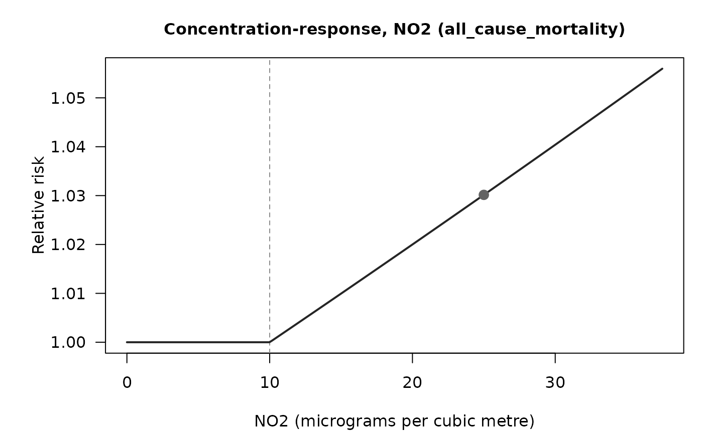
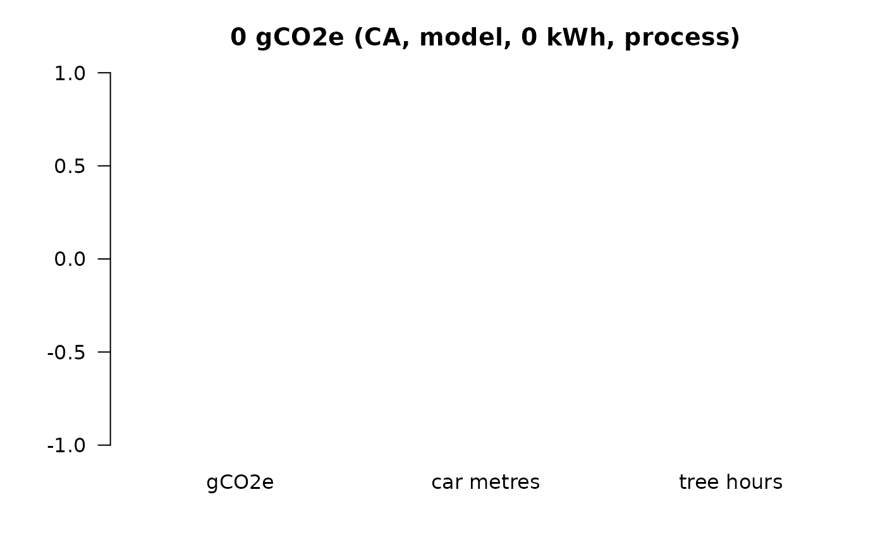
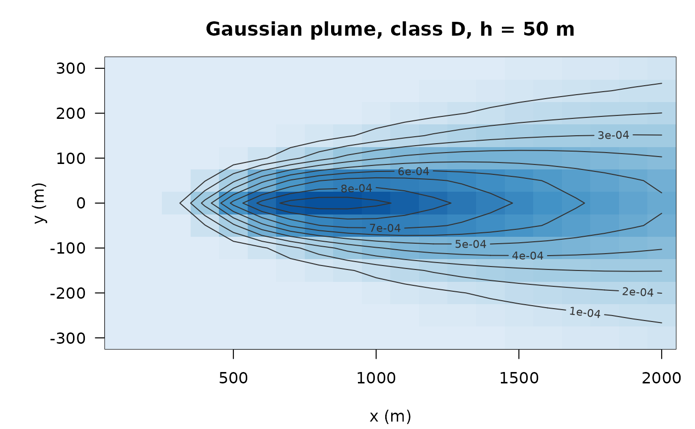

Every result the package returns draws itself with plot(): no
arguments beyond the object are needed, and every method takes the same
customisation (main, col or palette, ... for
the base-graphics call, the grid from the session option; see
bricklayer_plot_options). Titles fit their panel: a title
too wide for it is drawn a step smaller, and in a panel set one that still
does not fit becomes a letter with the key printed under the panels (the
returned data carry it as the panel_key attribute); the left margin
is sized from the widest tick label, so an axis title never overlaps the
numbers. (Session defaults: see
bricklayer_plot_options for the session defaults). Each
method returns the data it drew, invisibly, as a data frame.
Usage
# S3 method for class 'rmbl_stock_flow'
plot(
x,
...,
what = c("adp", "alos", "people", "days"),
main = NULL,
col = NULL,
palette = NULL
)
# S3 method for class 'rmbl_yoy'
plot(
x,
...,
what = c("pct_change", "value"),
main = NULL,
col = NULL,
palette = NULL
)
# S3 method for class 'rmbl_rate'
plot(x, ..., main = NULL, col = NULL, palette = NULL)
# S3 method for class 'rmbl_share'
plot(x, ..., main = NULL, col = NULL, palette = NULL)
# S3 method for class 'rmbl_rate_change'
plot(x, ..., main = NULL, col = NULL, palette = NULL)
# S3 method for class 'rmbl_band_sensitivity'
plot(x, ..., main = NULL, col = NULL, palette = NULL)
# S3 method for class 'rmbl_drift_calibration'
plot(x, ..., main = NULL, col = NULL, palette = NULL)
# S3 method for class 'bricklayer_drift'
plot(x, ..., main = NULL, col = NULL, palette = NULL)
# S3 method for class 'bricklayer_benford'
plot(x, ..., main = NULL, col = NULL, palette = NULL)
# S3 method for class 'bricklayer_power'
plot(x, ..., main = NULL, col = NULL, palette = NULL)
# S3 method for class 'bricklayer_freq'
plot(x, ..., main = NULL, col = NULL, palette = NULL)
# S3 method for class 'bricklayer_missingness'
plot(x, ..., main = NULL, col = NULL, palette = NULL)
# S3 method for class 'rmbl_region_coverage'
plot(x, ..., main = NULL, col = NULL, palette = NULL)
# S3 method for class 'bricklayer_outliers'
plot(x, ..., main = NULL, col = NULL, palette = NULL)
# S3 method for class 'bricklayer_correlations'
plot(x, ..., main = NULL, col = NULL, palette = NULL)
# S3 method for class 'bricklayer_cortable'
plot(x, ..., main = NULL, col = NULL, palette = NULL)
# S3 method for class 'bricklayer_falsification'
plot(x, ..., main = NULL, col = NULL, palette = NULL)
# S3 method for class 'rmbl_bounds'
plot(x, ..., main = NULL, col = NULL, palette = NULL)
# S3 method for class 'rmbl_crf'
plot(x, ..., exposure = NULL, main = NULL, col = NULL, palette = NULL)
# S3 method for class 'rmbl_burden'
plot(x, ..., main = NULL, col = NULL, palette = NULL)
# S3 method for class 'rmbl_equity'
plot(x, ..., main = NULL, col = NULL, palette = NULL)
# S3 method for class 'rmbl_pollution_report'
plot(x, ..., main = NULL, col = NULL, palette = NULL)
# S3 method for class 'rmbl_footprint'
plot(x, ..., main = NULL, col = NULL, palette = NULL)
# S3 method for class 'rmbl_field'
plot(x, ..., contours = 8L, main = NULL, col = NULL, palette = NULL)
# S3 method for class 'rmbl_particles'
plot(x, ..., main = NULL, col = NULL, palette = NULL)
# S3 method for class 'rmbl_count_trend'
plot(x, ..., main = NULL, col = NULL, palette = NULL)
# S3 method for class 'bricklayer_analysis'
plot(x, ..., which = NULL, main = NULL)Arguments
- x
The result.
- ...
Passed to the base-graphics call (
plot,barplotorimage); forbricklayer_analysis, passed on to each panel's method.- what
For
rmbl_stock_flow, the measures to draw (one panel each): any of"adp","alos","people","days","flow_rate","stock_rate". Forrmbl_yoy,"pct_change"or"value".- main
Title; each method has a default.
- col
Colours, overriding the palette.
- palette
A
bricklayer_palettename, overriding the session option.- exposure
For
rmbl_crfandrmbl_burden, the exposure range to draw the curve over; the default runs from 0 to 1.5 times the exposure in the object.- contours
Number of contour lines over a field image (0 for none).
- which
For
bricklayer_analysis, the panels: any of"change","rates","rate_change";NULLdraws every panel the analysis has.
Details
rmbl_stock_flow(
stock_flow) the average daily population, length of stay, people and person-days over the periods, one panel per measure inwhat; with an exposure, the flow and stock rates too.rmbl_yoy(
yoy) the period-over-period percent change with its interval, one row per period (and group), coloured by verdict;what = "value"draws the values instead.rmbl_rate,rmbl_share,rmbl_rate_change(
rate) the rate, share or percent change per group with its interval.rmbl_band_sensitivity(
band_sensitivity) the statistic against the cap applied to the open band.rmbl_drift_calibration,bricklayer_drift(
drift_calibrate,capsule_drift) the false-alarm rate per column against alpha; the population stability index per column with the drifted columns marked.bricklayer_benford(
benford_test) observed first-digit proportions against Benford's law.bricklayer_power(
capsule_power) the power curve: detection rate against injected effect size, with the 0.8 line.bricklayer_freq,bricklayer_missingness,rmbl_region_coverage(
frequency_table,missingness_pattern,region_coverage) horizontal bars.bricklayer_outliers(
mahalanobis_outliers) the distance of every row, outliers marked.bricklayer_correlations,bricklayer_cortable(
top_correlations,correlation_table) the correlation of every pair as a diverging bar.bricklayer_falsification(
capsule_falsify) the permutation null distribution with the observed statistic.rmbl_bounds(
published_bounds) each value inside its published-rounding envelope.rmbl_crf,rmbl_burden,rmbl_equity,rmbl_pollution_report(
crf_pm25,pollution_burden,exposure_concentration_index,verify_pollution) the concentration-response curve with the exposure marked; baseline against attributable cases; the concentration curve of exposure over income rank; and, for a report, all three on one page.rmbl_footprint(
compute_footprint) the emission with its car-kilometre and tree-month equivalents.rmbl_field,rmbl_particles(
plume_field,advection_diffusion_2d,lagrangian_particles) a concentration field as an image with contours; particle positions, with the counting grid behind them when one was given.rmbl_count_trend(
count_trend) the counts with the fitted trend.bricklayer_analysis(
analyse_table) the change, rates and rate change of a published table, one panel each.
Examples
sf <- stock_flow(days = c(13500, 14600, 15100), people = c(300, 320, 310),
period = 2021:2023)
plot(sf)

plot(sf, what = "alos", col = "firebrick", main = "Length of stay")

y <- yoy(data.frame(year = 2019:2023, n = c(10, 12, 11, 15, 14)), value = "n",
period = "year")
plot(y)

plot(benford_test(c(1, 12, 123, 1234, 2, 23, 3, 31, 4, 45, 5, 6, 7, 8, 9)))

plot(crf_no2(25))

plot(compute_footprint(sum(1:10), location = "CA", cpu_power_w = 45, memory_gb = 8))

plot(plume_field(q = 100, u = 5, h = 50, x = seq(100, 2000, by = 100),
y = seq(-300, 300, by = 50)))
